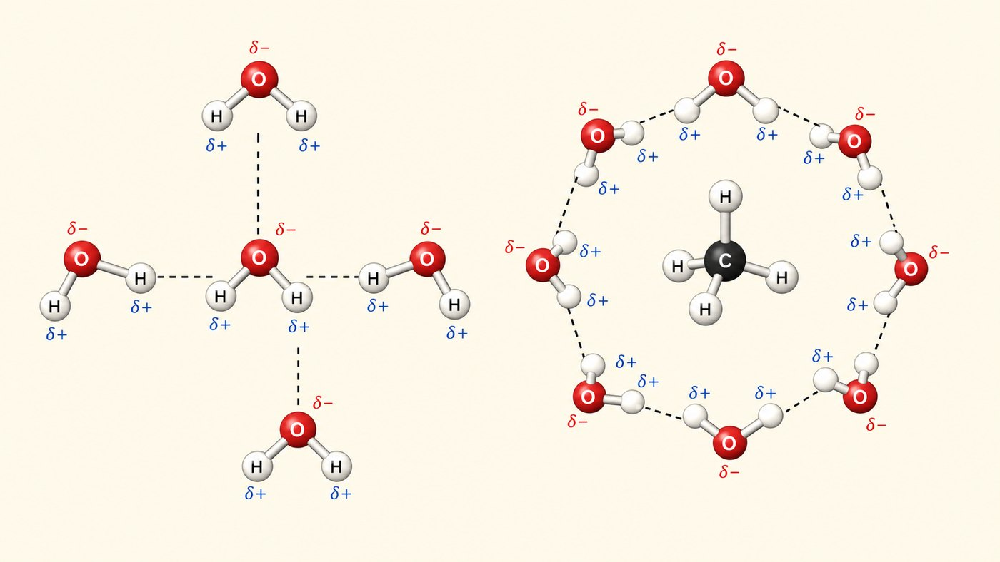
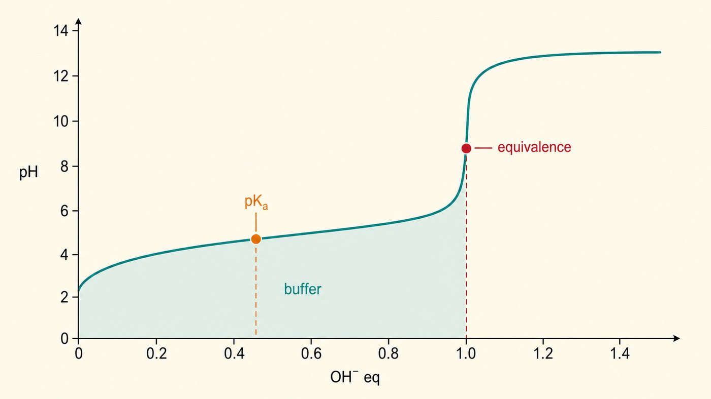

第 2 週
Nước, pH và dung dịch đệm
Tin tốt
pH、酸、鹼、緩衝。
Học cách nói bằng tiếng Trung.
為什麼血液 pH 不會亂跑。
Xem Hóa sinh dùng nó thế nào.
今天不學新概念。今天做兩件事:
Từ vựng · 不用背,看過就好
| 中文 | Tiếng Việt | English | 中文 | Tiếng Việt | English |
|---|---|---|---|---|---|
| 水 | Nước | Water | 酸 | Acid | Acid |
| 極性 | Phân cực | Polar | 鹼 | Base | Base |
| 非極性 | Không phân cực | Nonpolar | 解離 | Sự phân li | Dissociation |
| 氫鍵 | Liên kết hydrogen | Hydrogen bond | 濃度 | Nồng độ | Concentration |
| 親水性 | Ưa nước | Hydrophilic | 緩衝溶液 | Dung dịch đệm | Buffer |
| 疏水性 | Kỵ nước | Hydrophobic | 滴定曲線 | Đường cong chuẩn độ | Titration curve |
舊書寫 axit、bazơ。那是 2018 以前的寫法。意思一樣。
Một cái bẫy
base 酸鹼的鹼
接受 H⁺
Tuần này = base (acid-base)
base nitrogen 含氮鹼基
A、T、G、C
Tuần 11 = base nitrogen
越南語的 base 有兩個意思。
Base trong tiếng Việt có 2 nghĩa.
中文用兩個不同的詞。這次中文比較好用。
Nước phân cực

氧那邊帶負電。氫那邊帶正電。
Phía oxygen âm. Phía hydrogen dương.
Liên kết hydrogen: yếu nhưng nhiều
= 共價鍵的 1/20
很弱。
Rất yếu.
有幾兆個。
Có hàng nghìn tỷ.
很強。
Cộng lại → rất mạnh.
Nước hòa tan được gì?
| 特徵 | 例子 | 結果 | |
|---|---|---|---|
| 親水性 Ưa nước |
有電荷或極性 | 鹽、糖、胺基酸 | 水抓得住 → 溶解 |
| 疏水性 Kỵ nước |
沒電荷、非極性 | 油、脂質 | 水抓不住 → 分開 |
下週的蛋白質摺疊靠這個。第 10 週的細胞膜也靠這個。
Vì sao dầu không tan trong nước?
水會解離
| 酸性 Acid | 中性 | 鹼性 Base |
|---|---|---|
| pH < 7 [H⁺] 多 胃酸 ≈ 1.5 |
pH = 7 [H⁺] = [OH⁻] 純水 |
pH > 7 [OH⁻] 多 小腸 ≈ 8 |
H₂O ⇌ H⁺ + OH⁻
Lệch 1 → 10 lần
pH 5 的 [H⁺] 是 pH 6 的 10 倍。 pH 5 的 [H⁺] 是 pH 7 的 100 倍。
Acid yếu
全部解離。
Phân li hoàn toàn.
只解離一部分。
Chỉ phân li một phần.
HA ⇌ H⁺ + A⁻
生化裡幾乎都是弱酸。 Trong Hóa sinh hầu hết là acid yếu.
pKa 越小 = 酸越強。 pKa càng nhỏ = acid càng mạnh.
Đường cong chuẩn độ

Dung dịch đệm
A⁻ 把 H⁺ 吃掉。
Thêm acid → A⁻ hấp thụ H⁺.
HA 放出 H⁺ 補上。
Thêm base → HA nhả H⁺.
緩衝溶液 = 弱酸 + 它的共軛鹼
Dung dịch đệm = acid yếu + base liên hợp
兩邊都有人擋 → pH 幾乎不動。
緩衝範圍 = pKa ± 1。最強在 pH = pKa。
Vì sao phải học cái này
酸中毒
Nhiễm toan
正常
Bình thường
鹼中毒
Nhiễm kiềm
差 0.4 就可能致命。 Lệch 0.4 có thể tử vong.
Ví dụ lâm sàng: đái tháo đường
酮酸中毒 Nhiễm toan ceton —— 會致命。
身體靠碳酸氫鹽緩衝系統。(HCO₃⁻ / H₂CO₃)撐住。第 16 週會講酮體怎麼來的。
Bài tập: Đúng hay sai
pH 5 的 [H⁺] 是 pH 6 的 10 倍。
氫鍵比共價鍵強。
油不溶於水。因為水分子彼此抓得太緊。
緩衝液在 pH = pKa 時效果最好。
想一想:pKa 4.8 / 6.4 / 9.2,要做 pH 7 的緩衝液選哪個?
下週 · Tuần sau
Amino acid và peptide
▶ 課前:看詞彙表第 3 週(17 個詞)
Xem trước 17 từ của tuần 3
▶ 小測:下週前 10 分鐘,考今天的詞
Kiểm tra 5 câu, 10 phút đầu giờ
▶ 提示:胺基酸有兩處可解離
Gợi ý: amino acid có 2 chỗ phân li